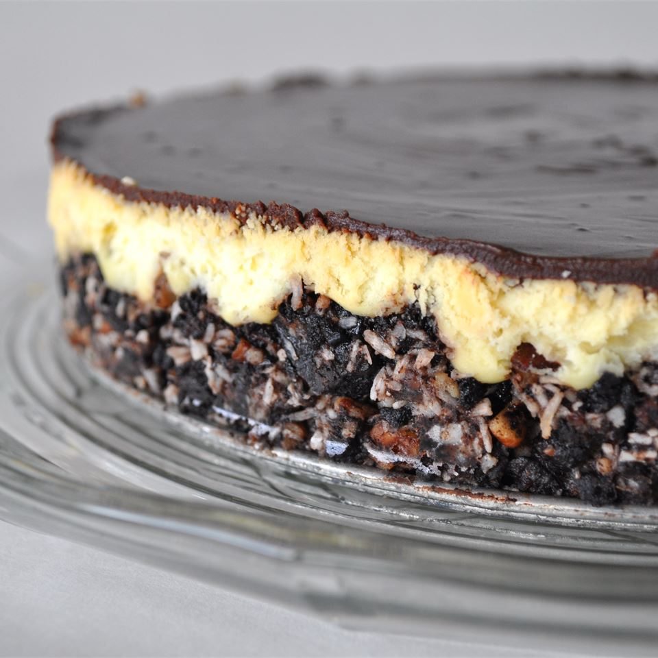

Canada Day Nanaimo Bar Cheesecake

The taste of a Nanaimo bar in a cheesecake! Can't get any better than this. Make in the jelly roll pan for serving a larger crowd. Result is thinner but still as tasty. (You will need to adjust baking time if you use the bigger pan.)
Ingredients
- 2½ cups crushed chocolate cream-filled sandwich cookies (such as OREO® Cookies)
- ½ cup butter, melted
- ¼ cup chopped pecans
- ½ cup flaked coconut
- 4 (8 ounce) packages cream cheese, softened
- 1 cup white sugar
- ¼ cup custard powder (such as Bird's® Custard Powder)
- 4 eggs
- 6 (1 ounce) squares semisweet chocolate
- ½ cup heavy cream
½ cup heavy cream
½ cup heavy cream
Steps
- Preheat an oven to 350 degrees F (175 degrees C).
- Stir together the cookie crumbs, melted butter, pecans, and coconut in a bowl until the mixture is well combined. Press into the bottom of a 9x13-inch baking dish, and refrigerate while making filling.
- Beat cream cheese, sugar, and custard powder in a large bowl with an electric mixer until light and fluffy, and beat in eggs, 1 at a time, beating each until fully incorporated before adding the next. Layer the filling over the crust.
- Bake in the preheated oven until the center is almost set, about 40 minutes. Refrigerate the cheesecake until fully cold, at least 3 hours.
- Melt the semisweet chocolate in a saucepan over very low heat with the cream, and stir until the mixture is smooth and well blended. Pour the chocolate mixture over the cheesecake, spread with a spatula to cover the middle layer, and refrigerate until the topping is firm, 15 to 20 minutes. Serve cold. Store leftovers in refrigerator.